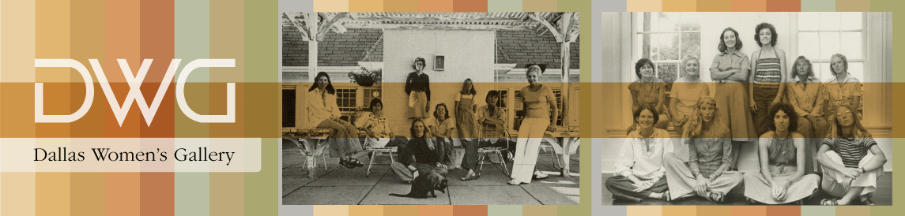
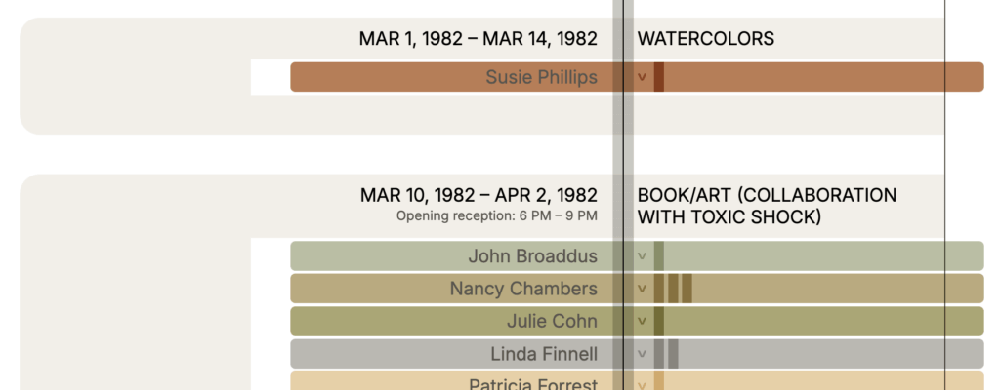

A Word About DWG and its Names
This institution underwent several re-inventions over its 13-year run. It began in November 1975 as D. W. Co-op, where D. W. stood for “Dallas Women’s.” Within its first year, it began to feature exhibitions by male artists as well. In 1979, the co-op voted to incorporate as DW Gallery. In 1983, a competing brand identity was developed (DWG), which was used alongside the DW Gallery branding until closing in 1988.
For simplicity, the essays will refer to this institution as “DWG,” except where need dictates otherwise.
The DWG Project is a multi-year initiative to reconstruct the exhibition history of DWG, a plucky and influential artist-run gallery in Dallas that ran from 1975 to 1988. To this end, the Project has created a suite of public-facing, open-access web resources, which include an video oral histories with DWG artists, a database of DWG art and ephemera, interactive timeline of the gallery’s history, contextual essays, and a bibliography.
Materials for the Project’s web resources have been selected and structured to answer the following research questions:
The public launch of the Project’s web resources in November 2025 coincides with the 50th anniversary of the opening of DWG, first known as D.W. Co-op (i.e., Dallas Women’s Co-op), in November 1975.
The Project is a collaboration between the Texas Art Project (TAP) at Texas A&M University (TAMU) and Art This Week Productions (ATWP), with critical partners from TAMU’s Libraries and Center of Digital Humanities Research and the Dallas Museum of Art Archives. It is co-led by Dr. Tianna Uchacz, Assistant Professor of early modern art and craft technology at TAMU, and Richard Serrano, Executive Director and Founder of the art education media non-profit ATWP.
Richard Serrano began interviewing Texas artists and curators in 2008, the year he founded Art This Week Productions and started producing short videos about contemporary art and exhibitions for the web. Time and again as he conducted interviews on Texas art, he heard passing mention, variously, of DW, D.W. Co-op, DW Gallery, or DWG and the role it played in giving first or early exhibitions to emerging creatives from the late 70s through the 80s. Archives of the Dallas Morning News and the Dallas Times Herald confirmed that DWG had been a critical driver of the city’s art scene at the time. Serrano recognized many of the artists named in the newspaper exhibition listings or reviews, as these artists had gone on to prominent careers and in some cases were still making art. Some, he even knew personally and had interviewed before. Despite his efforts, he could not find books, articles, or retrospective exhibitions about the gallery.
Several questions began to emerge: Beyond newspaper articles, what other traces of DWG’s existence were to be found and where? Who were the artists of DWG, and could a full list be reconstructed? What kind of work did the gallery exhibit? What was the relationship between DWG and the city and region’s art schools, commercial galleries, and museums? And, if answers to these questions could be found, how could the story of DWG’s history and significance best be told and shared? Serrano began to dig around.
An answer to the last question came when Serrano attended a presentation by Bill and Linda Reaves and Tianna Uchacz at the 2023 symposium of the Center for the Advancement of the Study of Early Texas Art. The Reaves had recently founded the Texas Art Project at Texas A&M, and Uchacz had helped them create a web companion to their exhibition on Edward “Buck” Muegge Schiwetz. The companion had some of the features Serrano imagined using for DWG material.
Uchacz and Serrano discussed building a similar digital interface for a project that would bring together the evidence for DWG’s activities and impact. This evidence survived in the form of scattered ephemera as well as select records in the Archives of American Art and the Dallas Museum of Art Archives. It was decided that they would augment this evidence with video oral histories to be conducted with around twenty DWG artists and community members. The ephemera database and the video oral history archive would then inform a web-based interactive timeline, so users could navigate these materials as a linear structure.
In short order, Uchacz partnered with TAMU’s Center of Digital Humanities Research to help design and build the ephemera database, interactive timeline, and project site, work undertaken by Kayley Hart and Bryan Tarpley respectively. She also secured commitments from the TAMU Libraries to host and archive the video oral histories, overseen by Mark Baggett and Sean Buckner respectively. Richard began reaching out to the artists in the Dallas area, hosting a first in-person meeting to introduce the project’s plans.
Uchacz brought her art historical credentials, digital humanities expertise, and experience in scholarly project management. Serrano brought his knowledge of the Texas art scene, media production savvy, and connection to the artists. The DWG Project was born.
The DWG Project is a Digital Humanities (DH) project. DH is a branch of humanities research that leverages the power of data, metadata, and programming to help answer humanities-driven questions. The DWG Project takes advantage of DH methods in two ways. First, it creates a dataset composed of digitized records relating to the gallery, its artists, and its history; it annotates those records with metadata (i.e., data about data); and it uses filter, sort, and search functions to reveal patterns or trends across those records and metadata. Second, it organizes and presents its underlying dataset in ways that focus attention on the Project’s core questions. In fact, DWG presents its ephemera dataset in two different interfaces, each of which is organized around one or more of the Project’s guiding questions.
The following descriptions of each project component help make the case for how data, its curation, and its presentation can help raise and answer humanities questions.
The Video Oral Histories stand apart from the Project’s other data in nature and integration. They are not contemporary with DWG’s existence (1975–1988); rather, they have all been produced since 2024 by Richard Serrano and several interviewers. Their file size and distinct metadata make them a distinct archive within the Project’s output. As such, they are hosted by the Texas A&M University Libraries and are discoverable through the Libraries’ catalog and publicly accessible through its Avalon interface.
The Video Oral Histories follow a shared interview script that aims to situate an individual’s tenure with or relationship to DWG in the context of their personal history and formation. Nevertheless, the interviews vary significantly in length and content, depending on the recollections of a given artist. They are well suited to answer the Project’s guiding research questions about the impact of DWG on its artists careers and the Dallas and Texas art scenes.
The Art & Ephemera Database collects and catalogs DWG ephemera that had previously been distributed across institutional and private collections around the country. The Art and Ephemera Database includes postcard exhibition announcements, newspaper and magazine clippings, in-house press releases, correspondence, personal photos, and notes from board and staff members as well as whatever few artworks we have found that are known to have been exhibited at DWG across its existence. Images of the ephemera are hosted on IIIF servers that allow for deep zooming as well as specialized display. The Database allows materials to be queried by its metadata, which have been structured according to an ontology that privileges “events” in the life of DWG, which can include exhibitions, gallery talks, changes in location, changes in directorship, board decisions, and other key moments.
The web interface of the Database can be filtered by Year, People, Collection, Event, Media, and Theme. It can be searched by any term that appears in the metadata. Future releases will allow for full-text search of its materials. The Database allows users to follow their curiosity as they engage with DWG materials and ask questions of their own. Because of the breadth of its materials, the Database is suited to address each of the Project’s guiding research questions; however, it is particularly useful when investigating the day-to-day workings of DWG and its impact on the Dallas, Texas, and American art scenes.
The Interactive Timeline draws on the same dataset as the Art & Ephemera Database, but it pulls select data from that set into a chronological interface. The only filter functions available are by year and by artist, the better to address the Project’s guiding research questions about the exhibition history of the gallery and the impact of DWG on its artists’ careers. Users can see ephemera associated with each artist in each exhibition, and this documentation is the evidence by which the DWG exhibition chronology has been reconstructed.

The contextual essays and bibliography use traditional forms of art historical scholarship. The essays synthesize insights from the project’s data in narrative form, while the bibliography provides a critical supporting apparatus to the claims of the essays and the Project’s data overall. Traditional though these may seem, they too are designed with features that locate them under the big tent of DH scholarship. The essays are integrated with elements drawn from the Art and Ephemera Database. The bibliography is a public-facing shared Zotero library; it relies on a piece of open-source, open-access software to make the bibliography a searchable and filterable tool in its own right.
The Project’s first official release of its web resources took place on November 4 and 6, 2025 at public events held at Texas A&M University and Southern Methodist University respectively. The details of the Project’s releases to date are available below in the “Release History” section of this page, as are specifics of future planned releases.
In a broader sense, however, the DWG Project only scratches the surface. We hope that the Project’s web resources will be useful to communities of artists, art historians, curators, archivists, dealers, and collectors for their own work and research. The Project would like to collect several more video oral histories, ingest rediscovered art and ephemera into its database, and see a major, traveling retrospective exhibition of DWG art. Serrano hopes to to produce a feature-length documentary on the gallery. There is much more work to be done.